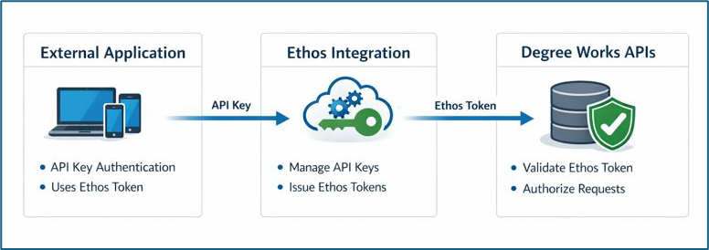

Ethos Integration
Degree Works supports secure API access through Ellucian Ethos Integration. Ethos provides a centralized framework for authentication, authorization, and request routing, allowing external applications to access Degree Works APIs without directly authenticating to Degree Works.
Ethos Integration acts as an intermediary between external applications and Degree Works. External applications authenticate with Ethos using API keys and receive bearer tokens. Ethos then validates those tokens, enforces permissions, and routes requests to the appropriate Degree Works APIs.
- Authoritative applications represent systems that own data and expose APIs. Degree Works is configured as the authoritative source for its API resources.
- Credentialing applications represent external systems that authenticate with Ethos and initiate API requests.
External applications never authenticate directly to Degree Works. All authentication and authorization are handled through Ethos Integration, which uses stored credentials to securely route requests to the authoritative Degree Works APIs.
Architecture
The following diagram illustrates how Ethos-enabled access to Degree Works APIs is structured.
Ethos Integration sits between external applications and Degree Works. External applications authenticate with Ethos using an API key and receive a bearer token. Ethos validates the token, enforces application permissions, and routes requests to Degree Works using stored credentials. Degree Works validates the request and services it only if the application is authorized for the requested resources.

Before configuring Ethos-enabled access to Degree Works APIs, ensure the following requirements are met.
- Degree Works is installed and operational.
- Ethos Integration is enabled for the tenant and administrative access is available to create and manage Ethos applications.
- Network access allows Ethos Integration to reach Degree Works API endpoints (on-premise deployments only; no network configuration is required for Degree Works Cloud customers).
- External applications support REST-based APIs, bearer-token authentication, and secure storage of API keys.
Configure Ethos API access to Degree Works
In this step, you prepare Degree Works to support Ethos-based API access. This includes enabling API authentication and configuring a service user that Ethos will use when routing requests to Degree Works.
The user and settings configured in this step are used internally by Ethos and are not exposed to external applications.
- Enable API Authentication by creating a specification for both Controller and Responsive Dashboard on the core.security.shp.authentication.enabled Shepherd setting.
- Access Controller and click Configuration.
- Search for and click core.security.shp.authentication.enabled.
- Click Add Specification.
- In the Specification field, select dashboard.
- In the Value field, select true.
- Click Save.
- If access to the Scribe endpoints is desired, necessary, repeat steps 1.c through 1.f, but select controller in the Specification field.
- Create a service user who can access the Responsive Dashboard and Controller APIs from Ethos.
- Access Controller and click Authorization.
- Click Add User.
- Enter the applicable information in the required User name, Access ID, and Password fields.
- User Access: In the User class field, select API Rest Users.
- User Keys: Click Add Key and select the applicable key.
Assign user keys based on the APIs that the external application will use, and grant the minimum set of user keys needed for the target API endpoint. Limiting permissions ensures controlled access and aligns with the least privilege security practices. For a list of user keys needed for the Degree works API Endpoints, see Degree Works API Catalog. You may have to log in to the Documentation site.
Configure network access for on-premise Degree Works deployments
This step applies only to on-premise Degree Works deployments. Degree Works SaaS customers do not need to open firewall ports, as network connectivity to Ethos Integration is managed automatically.
| Source | Destination | Port | Purpose |
|---|---|---|---|
|
Ethos (AWS Cloud)
|
Degree Works server hosting Responsive Dashboard and Controller. | API Port | For API requests |
Configure Degree Works as the authoritative source for API resources
In this step, you configure Degree Works as the authoritative source for its API resources in Ethos Integration.
The authoritative application defines which APIs and resources Degree Works owns and allows Ethos Integration to route requests correctly. This configuration enables Ethos to connect to Degree Works using trusted internal credentials to discover available endpoints and automatically populate the list of owned resources.
To create or verify the application from the customer center:
- Navigate to .
- Select the appropriate tenant environment.
- From the Ethos Home page select the Applications tab. Create a new application by clicking on the Manually button.
- On the Add Application pop-up dialog select Continue without checking either Configure REST API proxy or GraphQL resources.
Add the Application name and Description, if desired (i.e. Degree Works Responsive Dashboard) then click Next.
- On the Subscription Page, select Skip.
- On the Finish page click View Application to view the application just created. The system returns you to the API Keys tab.
- On the API Keys tab, key click on edit next to the API key automatically added for the application. In the Add API Key dialog make sure the first radio option labeled Add API key with no IP address restrictions is selected. If not, select this radio option and click Add.
- Click on the Owned Resources tab for the newly created application to enter the Base URI of the Degree Works application you are setting up.
- Select the Basic Authentication radio option, enter the URI desired and click Save. For example, if setting up the Responsive Dashboard enter https://hostname:port/path/dashboard/api
- Click Auto-Configure Resources.
- From the Request Resources from Application dialog enter the username and password of the user set up in Step 1 then select Next. The system will query the API and add the list of Owned Resources to the application. Click Close to exit the dialog and view the resources.
- Repeat the above steps for Controller if you want to access the scribe endpoints.
Configure an Ethos credentialing application for external API access
In this step, you create a credentialing application in Ethos Integration to enable external access to Degree Works APIs.
The credentialing application represents the calling system and is responsible for authentication and authorization when making API requests. This application does not own any Degree Works resources. Instead, it uses an Ethos API key to authenticate with Ethos and obtain bearer tokens. Ethos then uses the credentials associated with the authoritative Degree Works application to route requests securely.
- From the Ethos Home page select the Applications tab. Create a new application by clicking on the Manually button.
- On the Add Application pop-up dialog, select Continue without checking either Configure REST API proxy or GraphQL resources.
- On the Details page add the Application name and Description, if desired (i.e. Degree Works Credentials)
- On the Subscriptions page select the Skip button without adding subscriptions.
- On the Finish page click View Application to view the application just created.
- The system returns you to the API Keys tab. Under Actions for the API key click on edit. In the Add API Key dialog make sure the first radio option for Add API key with no IP address restrictions is selected. If not, select this radio option and click Add.
Note: Record the API Key generated for this application.
- Click on the Credentials tab for the newly created application and click Add Credentials.
- In the Source Application dropdown, click the Ethos application created in Step 3.
- The system defaults in the username and password associated with the source application.
- In the Select a resource dropdown, select any of the resources available for the given application. You do not need to add an individual credential for each endpoint in the applications API, but you do need to set up each application. For example, if you created an application for both Responsive Dashboard and Controller in Step 3, you will need to add a credential to at least one resource for each application.
Validate Ethos authentication and Degree Works API access
In this step, you validate that Ethos authentication and routing to Degree Works APIs are configured correctly.
This includes confirming that the credentialing application can obtain a bearer token from Ethos and that authenticated requests are successfully routed to Degree Works using the configured authoritative resources and credentials. Completing this step verifies end-to-end connectivity between Ethos and Degree Works and confirms that authentication, authorization, and resource access are functioning as expected.
- Use an API client such as Bruno or curl to request a bearer token from Ethos.
- Endpoint:
POST: https://integrate.elluciancloud.com/auth
- Authentication:
- Use the API key generated for the credentialing application.
- Send the request as a bearer token authentication request.
A successful response returns a bearer token.
- Endpoint:
- Using the bearer token returned from the authentication request, make a request to a Degree Works API endpoint through Ethos.
Example Endpoint:
GET: https://integrate.elluciancloud.com/api/requirement-blocks
Ethos routes the request to the authoritative Degree Works application using the configured credentials.
Confirm that the request returns a successful response (HTTP 200) and that the expected data is returned.